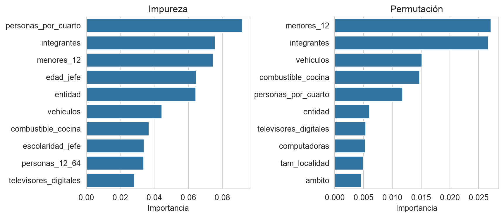
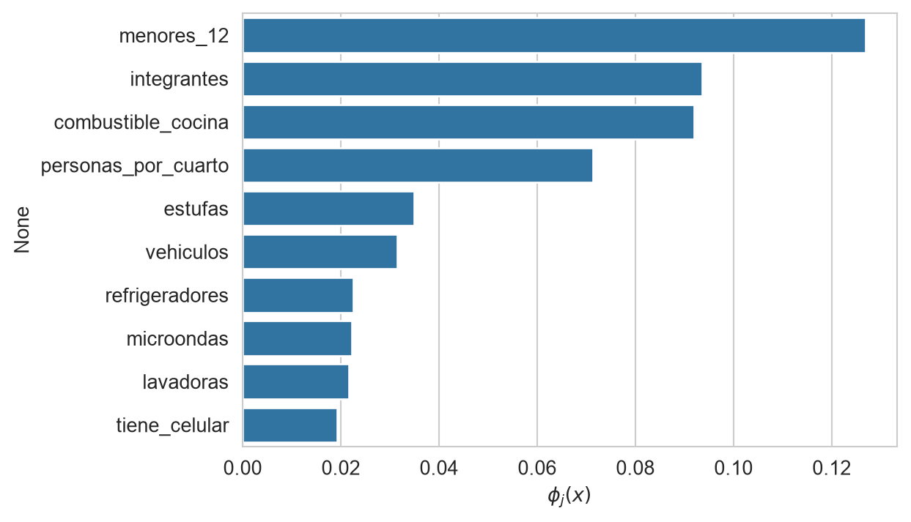
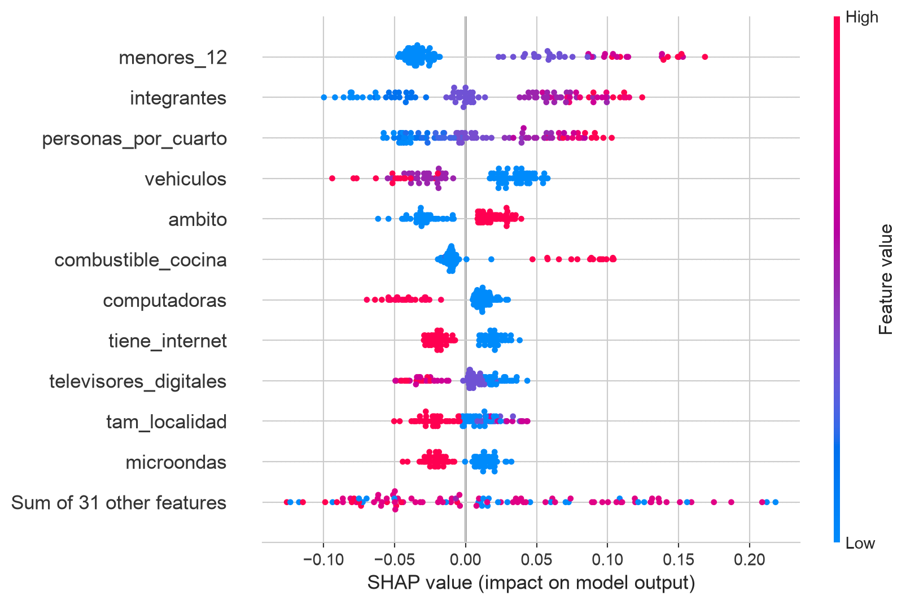
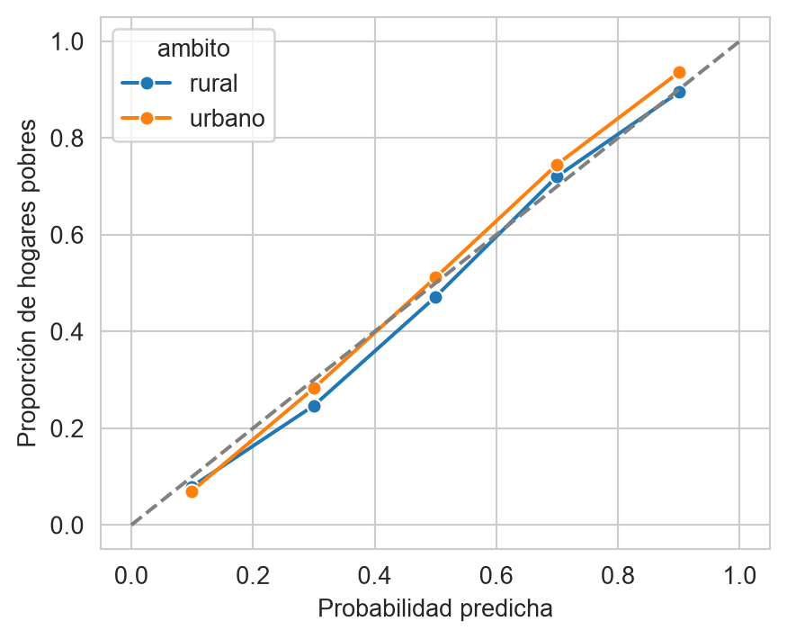

from sklearn.model_selection import train_test_split
from sklearn.ensemble import RandomForestClassifier
from sklearn.inspection import permutation_importance
from sklearn.inspection import PartialDependenceDisplay
from sklearn.metrics import recall_score
from matplotlib import pylab as plt
import numpy as np
import pandas as pd
import seaborn as sns
import shap
URL_DATOS = ('https://github.com/INGEOTEC/AprendizajeComputacional/'
'releases/download/datos-v1')16 Interpretabilidad y Equidad
El objetivo de la unidad es conocer y aplicar técnicas para interpretar las predicciones de un modelo y para medir si sus errores se reparten de manera equitativa entre grupos de la población.
Paquetes usados
16.1 Introducción
El capítulo de ensambles (Capítulo 11) terminó con la observación incómoda de que un bosque aleatorio predice mejor que un árbol de decisión, pero ya no se puede leer. Un árbol pequeño se entiende siguiendo sus reglas de la raíz a una hoja, mientras que un bosque de cientos de árboles, cada uno con miles de nodos, no se puede seguir de esa manera. Este es el dilema de Occam que describe Breiman (2001b), según el cual entre los modelos disponibles los más exactos suelen ser los más difíciles de entender. El mismo autor señala además el efecto Rashomon, que consiste en que con frecuencia hay muchos modelos distintos, que usan las variables de maneras diferentes, con prácticamente el mismo rendimiento. Eso hace frágil cualquier interpretación que se apoye en un solo modelo, porque otro igual de bueno podría contar una historia diferente.
En política pública esta dificultad tiene consecuencias prácticas, porque una regla de focalización decide qué hogares reciben un apoyo y cuáles no. Quien la opera debe poder explicar qué variables mueven la decisión, si esas variables son razonables y, ante el reclamo de un hogar concreto, por qué ese hogar quedó dentro o fuera del programa, ya que un modelo que no se puede explicar es difícil de auditar, de defender y de corregir.
En este capítulo se separan dos preguntas sobre un modelo. La pregunta global es qué variables usa el modelo en general y cómo cambia su predicción cuando cambian, y se responde con la importancia de variables y con la dependencia parcial. La pregunta local es por qué el modelo hizo una predicción particular, y se responde con los valores de Shapley. Una alternativa a explicar un modelo opaco es usar uno interpretable por construcción, como un árbol pequeño (Capítulo 10) o una regresión con pocas variables (Capítulo 3), y Rudin (2019) recomienda preferirlos en decisiones de alto impacto cuando rinden parecido al modelo opaco. Una referencia general sobre el tema es Molnar (2022).
La advertencia central del capítulo es que todas estas técnicas explican al modelo, es decir, describen las relaciones que el modelo aprendió de los datos, de manera que una variable importante para predecir no necesariamente modifica el resultado cuando se modifica. Esta es la misma distinción entre predecir e inferir que se discutió en Sección 1.2 y al interpretar los coeficientes de una regresión en Sección 3.8.
Mientras que interpretar el modelo responde qué variables usa, la segunda mitad del capítulo (Sección 16.6) responde a quién afectan sus errores. Un modelo con buen rendimiento promedio puede equivocarse más con un grupo de la población que con otro, y en una decisión pública eso importa aunque el promedio sea bueno, porque los hogares pobres que el programa deja fuera no se reparten al azar. El capítulo presenta cómo medir esas diferencias, por qué no se corrigen quitando una variable, cómo se pueden reducir y por qué no se pueden eliminar todas a la vez. Una referencia general sobre equidad en aprendizaje computacional es Barocas et al. (2023).
16.2 Modelo de Referencia
Para tener un ejemplo concreto se usa el problema de focalización (Sección B.1.1), que consiste en predecir si un hogar es pobre por ingresos a partir de sus características, con un bosque aleatorio como el de Capítulo 11. La preparación de los datos cambia respecto a los capítulos anteriores, en los que cada variable de texto se convertía en variables indicadoras, una columna por categoría. Aquí cada variable de texto se sustituye por un código entero, de manera que cada variable original quede en una sola columna y la interpretación se haga por variable y no por categoría. El código entero es suficiente porque los árboles solo necesitan poder ordenar los valores de una variable para cortarla, pero no sería adecuado para un modelo lineal, que interpretaría el código como una cantidad. La partición es la misma de antes, con 20% de los hogares para prueba, estratificada por la clase y con random_state=0.
pobreza = pd.read_csv(f'{URL_DATOS}/enigh_pobreza.csv.gz')
X = pobreza.drop(columns=['pobre_ingresos', 'factor'])
texto = [c for c in X.columns
if not pd.api.types.is_numeric_dtype(X[c])]
for c in texto:
X[c] = X[c].astype('category').cat.codes
X = X.astype(float)
y = pobreza['pobre_ingresos'].to_numpy()
T, G, y_t, y_g = train_test_split(X, y, test_size=0.2,
random_state=0, stratify=y)
bosque = RandomForestClassifier(min_samples_split=9, n_jobs=-1,
random_state=0).fit(T, y_t)
prob = bosque.predict_proba(G)[:, 1]
hy = bosque.predict(G)
recall = recall_score(y_g, hy, average='macro')El conjunto tiene \(89,988\) hogares y \(42\) variables predictoras, de las cuales \(16\) son de texto y se convirtieron en códigos enteros. T y G son DataFrame, así que conservan los nombres de las variables, que se usan en todas las figuras del capítulo. La conversión X.astype(float) deja todas las columnas como números reales, que es lo que esperan algunas de las funciones de las secciones siguientes. El bosque tiene un macro-recall (Sección 2.3.6) de \(0.7360\) en el conjunto de prueba, prácticamente el mismo que se obtiene con variables indicadoras.
Varias de las técnicas del capítulo vuelven a predecir el conjunto de prueba muchas veces con los datos modificados. Para que el costo de cómputo sea razonable, en las secciones siguientes se usa una muestra de 3,000 hogares de prueba.
G_m = G.sample(3000, random_state=0)
y_m = y_g[G.index.get_indexer(G_m.index)]16.3 Importancia de Variables
La primera pregunta global es cuánto pesa cada variable en las predicciones del modelo. Para un bosque hay dos medidas usuales, la que se obtiene de la estructura de los árboles a partir de la reducción de impureza y la que se obtiene midiendo cuánto empeora el rendimiento cuando se destruye la información de una variable, llamada importancia por permutación.
16.3.1 Importancia por Impureza
En un árbol de decisión cada corte reduce la impureza de los nodos, medida con la entropía o con el índice de Gini (Capítulo 10). La importancia de la variable \(j\) en un árbol es la suma de las reducciones de impureza de los nodos donde se cortó con esa variable, ponderada por la fracción de ejemplos que llegan a cada nodo. En un bosque esa importancia se promedia sobre los \(B\) árboles y se normaliza para que la suma sobre las variables sea \(1\):
\[ I_j \propto \frac{1}{B} \sum_{b=1}^B \sum_{t \in \mathcal T_b(j)} \frac{N_t}{N} \left[ H(t) - \frac{N_{t_\textsf{izq}}}{N_t} H(t_\textsf{izq}) - \frac{N_{t_\textsf{der}}}{N_t} H(t_\textsf{der}) \right], \tag{16.1}\]
donde \(\mathcal T_b(j)\) son los nodos del árbol \(b\) que cortan con la variable \(j\), \(H\) es la impureza, \(N_t\) es el número de ejemplos que llegan al nodo \(t\), y \(t_\textsf{izq}\) y \(t_\textsf{der}\) son sus hijos. scikit-learn la calcula al entrenar y la guarda en el atributo feature_importances_.
imp_impureza = pd.Series(bosque.feature_importances_,
index=X.columns)La primera limitación de esta medida es que se calcula con el conjunto de entrenamiento, de manera que no dice nada sobre el rendimiento del modelo fuera de muestra, y una variable con la que el bosque se sobreajusta puede aparecer como muy importante. La segunda limitación es que favorece a las variables con muchos valores distintos, porque ofrecen más cortes posibles y alguno de ellos reducirá la impureza aunque sea por azar (Strobl et al. (2007)).
16.3.2 Importancia por Permutación
La importancia por permutación, propuesta por Breiman (2001a), se mide en el conjunto de prueba. Se calcula el rendimiento del modelo, se permutan al azar los valores de una variable, lo que rompe su relación con la clase sin cambiar su distribución, y se vuelve a medir el rendimiento. Si el modelo depende de esa variable el rendimiento cae, y esa caída es la importancia. Como la permutación es aleatoria, se repite \(R\) veces y se promedia:
\[ I_j = s - \frac{1}{R}\sum_{r=1}^R s_{j,r}, \tag{16.2}\]
donde \(s\) es el macro-recall original y \(s_{j,r}\) es el macro-recall con la variable \(j\) permutada en la repetición \(r\). El siguiente código hace una repetición a mano con la variable integrantes. base es el macro-recall en la muestra, G_perm es una copia de la muestra con la columna integrantes permutada y caida es la diferencia de rendimientos.
rng = np.random.default_rng(0)
base = recall_score(y_m, bosque.predict(G_m), average='macro')
G_perm = G_m.copy()
G_perm['integrantes'] = rng.permutation(G_m['integrantes'].to_numpy())
caida = base - recall_score(y_m, bosque.predict(G_perm),
average='macro')El macro-recall en la muestra es \(0.7371\) y al permutar integrantes cae \(0.0180\). La función permutation_importance hace lo mismo para todas las variables, con n_repeats repeticiones cada una, y el parámetro scoring indica la medida de rendimiento.
perm = permutation_importance(bosque, G_m, y_m, n_repeats=10,
random_state=0,
scoring='recall_macro')
imp_perm = pd.Series(perm.importances_mean, index=X.columns)Código
fig, ax = plt.subplots(1, 2, figsize=(9, 4))
for k, (imp, titulo) in enumerate([(imp_impureza, 'Impureza'),
(imp_perm, 'Permutación')]):
top = imp.sort_values(ascending=False).head(10)
sns.barplot(x=top.to_numpy(), y=top.index, ax=ax[k])
ax[k].set_title(titulo)
ax[k].set_xlabel('Importancia')
ax[k].set_ylabel('')
fig.tight_layout()
La Figura 16.1 compara las dos medidas y muestra que por reducción de impureza las cinco variables más importantes son personas_por_cuarto, integrantes, menores_12, edad_jefe, entidad, mientras que por permutación son menores_12, integrantes, vehiculos, combustible_cocina, personas_por_cuarto. Las listas coinciden en lo esencial, que es el tamaño y la composición del hogar, pero no en todo. La diferencia más clara es edad_jefe, que ocupa el lugar \(4\) por impureza y el lugar \(40\) por permutación, y que tiene \(94\) valores distintos, el tipo de variable que, como se explicó, la impureza premia aunque no ayude a predecir fuera de muestra. Algo parecido, en menor grado, pasa con entidad, que tiene \(32\) valores distintos y pasa del lugar \(5\) por impureza al \(6\) por permutación.
La primera limitación de la importancia por permutación aparece cuando dos variables están correlacionadas, como integrantes, menores_12 y personas_por_cuarto, que miden casi lo mismo, porque al permutar una el modelo compensa con las otras y la importancia de cada una se subestima. Además, permutar una variable crea hogares que no existen, por ejemplo con pocos integrantes y muchos menores de 12 años, y el rendimiento se mide en esos hogares imposibles. Finalmente, \(11\) variables tienen una importancia ligeramente negativa (la menor es \(-0.0026\)), lo cual es ruido de la permutación y equivale a una importancia de cero.
16.4 Dependencia Parcial
La importancia dice cuánto pesa una variable, pero no en qué dirección mueve la predicción. La dependencia parcial (Friedman (2001)) responde cómo cambia la predicción promedio cuando la variable \(j\) toma el valor \(v\) y las demás variables se quedan como están:
\[ \textsf{DP}_j(v) = \frac{1}{N}\sum_{i=1}^N f(x_i^{(j \leftarrow v)}), \tag{16.3}\]
donde \(x_i^{(j \leftarrow v)}\) es la observación \(i\) con su variable \(j\) sustituida por \(v\) y \(f\) es la probabilidad de la clase positiva, en este caso que el hogar sea pobre. El siguiente código la calcula a mano para la variable integrantes con valores de \(1\) a \(10\), asignando cada valor v a todos los hogares de la muestra y promediando la probabilidad predicha.
valores = np.arange(1, 11)
dp = []
for v in valores:
G_v = G_m.copy()
G_v['integrantes'] = float(v)
dp.append(bosque.predict_proba(G_v)[:, 1].mean())
dp = np.array(dp)La probabilidad promedio de pobreza pasa de \(0.2512\) cuando todos los hogares tienen un integrante a \(0.4366\) cuando tienen diez, y con seis integrantes ya es \(0.4281\), de manera que la curva se aplana después de ese valor. La clase PartialDependenceDisplay hace el mismo cálculo y lo dibuja. Con kind='both' dibuja además una curva por hogar, la expectativa condicional individual (ICE, por sus siglas en inglés, Goldstein et al. (2015)), que es la predicción de ese hogar cuando se mueve solo la variable \(j\), de manera que la dependencia parcial es el promedio de esas curvas. El parámetro subsample=100 limita a 100 el número de curvas individuales que se dibujan.
Código
fig, ax = plt.subplots(1, 3, figsize=(10, 3.5))
_ = PartialDependenceDisplay.from_estimator(
bosque, G_m,
['integrantes', 'personas_por_cuarto', 'vehiculos'],
kind='both', subsample=100, random_state=0, ax=ax)
La Figura 16.2 muestra que, en el modelo, más integrantes y más personas por cuarto suben la probabilidad de pobreza, y tener vehículos la baja. Las curvas individuales no son paralelas, ya que para algunos hogares la probabilidad casi no cambia y para otros cambia mucho. Eso indica que el efecto de una variable depende de los valores de las otras, es decir, que hay interacciones, y el promedio las oculta.
La primera limitación de la dependencia parcial es que supone que se puede mover una variable dejando fijas las demás, y cuando las variables están correlacionadas eso evalúa al modelo en hogares que no existen, como un hogar de un integrante con cuatro personas por cuarto. La segunda es que describe al modelo y no es un efecto causal. Que la probabilidad predicha baje con el número de vehículos no dice que regalar un vehículo saque a un hogar de la pobreza, porque el vehículo es una señal del ingreso del hogar y no su causa.
16.5 Valores de Shapley
A diferencia de las técnicas anteriores, que son globales, los valores de Shapley dan una explicación local, porque para un hogar \(x\) reparten entre las \(d\) variables la diferencia entre su predicción \(f(x)\) y la predicción promedio. La idea viene de la teoría de juegos cooperativos (Shapley (1953)), donde un grupo de jugadores obtiene una ganancia en conjunto y hay que repartirla de manera justa. Aquí las variables son los jugadores y la predicción es la ganancia, y a cada jugador se le paga su contribución marginal, es decir, cuánto cambia la ganancia cuando entra, promediada sobre todos los órdenes en que los jugadores pueden entrar:
\[ \phi_j(x) = \frac{1}{d!} \sum_{\pi} \left[ v(S_\pi^j \cup \{j\}) - v(S_\pi^j) \right], \tag{16.4}\]
donde la suma recorre las \(d!\) permutaciones \(\pi\) de las variables, \(S_\pi^j\) son las variables que aparecen antes de \(j\) en \(\pi\) y \(v(S)\) es la predicción esperada cuando las variables de \(S\) valen lo que valen en \(x\) y las demás se toman de un hogar de referencia \(z\) elegido de un conjunto de fondo. Los valores de Shapley cumplen la propiedad de eficiencia, según la cual suman exactamente la diferencia entre la predicción del hogar y la predicción promedio en el conjunto de fondo,
\[ \sum_{j=1}^d \phi_j(x) = f(x) - \mathbb E[f(z)]. \tag{16.5}\]
Con \(d\) variables hay \(d!\) permutaciones, un número intratable aun para \(d\) pequeña. La solución es aproximar la Ecuación 16.4 por muestreo (Štrumbelj y Kononenko (2014)). Para ello, por cada hogar de fondo \(z\) se sortea una permutación y se van cambiando, una por una y en ese orden, las variables de \(z\) por las de \(x\), anotando cuánto cambia la predicción en cada paso. El cambio en el paso donde entra la variable \(j\) es una muestra de su contribución marginal.
def shapley(modelo, x, fondo, seed=0):
rng = np.random.default_rng(seed)
d = x.shape[0]
phi = np.zeros(d)
for z in fondo:
orden = rng.permutation(d)
z = z.copy()
filas = np.empty((d + 1, d))
filas[0] = z
for k, j in enumerate(orden):
z[j] = x[j]
filas[k + 1] = z
p = modelo.predict_proba(filas)[:, 1]
phi[orden] += np.diff(p)
return phi / fondo.shape[0]
fondo = T.sample(100, random_state=0).to_numpy()
i = int(np.argmax(prob))
x = G.iloc[i].to_numpy()
phi = pd.Series(shapley(bosque, x, fondo), index=X.columns)
esperado = bosque.predict_proba(fondo)[:, 1].mean()La función shapley recibe el modelo, el hogar x y el conjunto de fondo. Por cada hogar de fondo z sortea un orden de las variables (orden) y construye la matriz filas con los \(d+1\) hogares intermedios, en la que el primer renglón es z y cada renglón siguiente cambia una variable más de z por la de x, de manera que el último renglón es x. Las probabilidades p de esos renglones se predicen de una sola vez y np.diff(p) son las contribuciones marginales de las variables en el orden en que entraron, y phi[orden] += las acumula en la posición de cada variable. Al final se promedia sobre los hogares de fondo. El conjunto fondo son 100 hogares de entrenamiento, x es el hogar de prueba con mayor probabilidad predicha de ser pobre y esperado es la predicción promedio en el fondo.
La probabilidad predicha para el hogar es \(0.9976\) y la predicción promedio en el fondo es \(0.2911\). Los valores de Shapley suman \(0.7066\), de manera que el promedio más la suma es \(0.9976\), la predicción del hogar, como pide la Ecuación 16.5. Aquí la igualdad es exacta porque cada permutación recorre el camino completo de z a x, así que la suma de sus contribuciones marginales es \(f(x) - f(z)\).
Código
top = phi.reindex(phi.abs().sort_values(ascending=False).index[:10])
fig, ax = plt.subplots(figsize=(6, 4))
sns.barplot(x=top.to_numpy(), y=top.index, ax=ax)
ax.set_xlabel(r'$\phi_j(x)$')
La Figura 16.3 muestra las diez variables con mayor contribución en valor absoluto. Para leerla conviene ver los valores que tiene el hogar en las variables más relevantes:
G.iloc[i][phi.abs().sort_values(ascending=False).index[:5]]menores_12 4.0
integrantes 9.0
combustible_cocina 4.0
personas_por_cuarto 3.0
estufas 0.0
Name: 20347, dtype: float64Las variables que más empujan la probabilidad de este hogar hacia arriba son menores_12, integrantes, combustible_cocina, personas_por_cuarto. Es decir, el modelo lo considera pobre por el tamaño y la composición del hogar y por sus condiciones de vivienda, lo que coincide con las variables más importantes de la Figura 16.1. Una explicación así es la que se puede dar a quien pregunta por qué un hogar concreto quedó dentro del programa.
16.5.1 La librería shap
La librería shap (Lundberg y Lee (2017)) implementa los valores de Shapley para distintos tipos de modelos. Para árboles y ensambles de árboles tiene un algoritmo exacto, TreeExplainer (Lundberg et al. (2020)), que recorre la estructura de los árboles y no necesita muestrear permutaciones. Con feature_perturbation='interventional' y el mismo conjunto de fondo estima la misma cantidad que la función shapley. Por su parte, model_output='probability' indica que se explica la probabilidad y no otra salida del modelo.
explicador = shap.TreeExplainer(bosque, data=fondo,
model_output='probability',
feature_perturbation='interventional')
phi_shap = pd.Series(explicador(x.reshape(1, -1)).values[0, :, 1],
index=X.columns)El resultado de explicador tiene un valor por hogar, por variable y por clase, y el último índice, 1, selecciona la clase “pobre”.
| Variable | Muestreo | shap |
|---|---|---|
menores_12 |
\(0.1270\) | \(0.1221\) |
integrantes |
\(0.0936\) | \(0.0979\) |
combustible_cocina |
\(0.0920\) | \(0.0896\) |
personas_por_cuarto |
\(0.0713\) | \(0.0771\) |
vehiculos |
\(0.0314\) | \(0.0351\) |
estufas |
\(0.0350\) | \(0.0321\) |
lavadoras |
\(0.0217\) | \(0.0224\) |
microondas |
\(0.0222\) | \(0.0203\) |
La Tabla 16.1 compara los valores de las ocho variables con mayor contribución según shap. Los dos vectores tienen una correlación de \(0.9966\), y la diferencia entre ellos se debe al error de muestreo de la función shapley, que usa una sola permutación por cada hogar de fondo.
Como TreeExplainer es rápido, se puede explicar a muchos hogares a la vez. El siguiente código calcula los valores de Shapley de 100 hogares de prueba (la opción output: false del chunk oculta la barra de progreso que imprime la librería).
G_s = G.sample(100, random_state=0)
valores_shap = explicador(G_s.to_numpy())Código
explicacion = shap.Explanation(valores_shap.values[:, :, 1],
base_values=valores_shap.base_values[:, 1],
data=G_s.to_numpy(),
feature_names=list(X.columns))
shap.plots.beeswarm(explicacion, max_display=12, show=False)
La Figura 16.4 tiene un renglón por variable, ordenadas por el promedio del valor absoluto de sus contribuciones, y un punto por hogar. La posición horizontal es la contribución de la variable a la probabilidad de ese hogar y el color es el valor que toma la variable en el hogar, de azul (bajo) a rojo (alto). La figura es a la vez local, porque cada punto es la explicación de un hogar, y global, porque el conjunto de puntos muestra cómo usa el modelo cada variable. Por ejemplo, si los puntos rojos están a la derecha, valores altos de la variable aumentan la probabilidad de pobreza. El promedio del valor absoluto por variable es otra medida de importancia, que se puede comparar con las de la Figura 16.1.
Los valores de Shapley comparten las limitaciones de las técnicas anteriores, empezando por que dependen del conjunto de fondo, ya que con otro conjunto de referencia la predicción promedio y el reparto cambian. Cuando las variables están correlacionadas, el crédito se reparte entre ellas de una manera que depende del modelo y no de una relación real entre las variables y la pobreza. Además, otra vez explican al modelo, de manera que la contribución de una variable no es el efecto de cambiarla en el mundo.
16.6 Equidad Algorítmica
En esta sección se mide la equidad del mismo bosque de focalización de Sección 16.2 respecto a dos atributos del hogar, que son el ámbito, rural o urbano, y el sexo de la jefatura. Se llama atributo protegido, \(\mathcal A\), a la variable que define los grupos que se quieren comparar. La regla de decisión es la misma que usa predict, que consiste en incluir al hogar en el programa cuando la probabilidad predicha de ser pobre es mayor que \(0.5\).
16.6.1 Criterios de Equidad
Sea \(\hat y\) la decisión (\(\hat y = 1\) significa incluir al hogar), \(y\) la clase (\(y = 1\) significa que el hogar es pobre) y \(a\) y \(b\) dos grupos del atributo protegido. El criterio más simple es la paridad demográfica, que pide que la proporción de hogares incluidos sea la misma en cada grupo,
\[ \mathbb P(\hat y = 1 \mid \mathcal A = a) = \mathbb P(\hat y = 1 \mid \mathcal A = b). \tag{16.6}\]
Este criterio no usa la clase, y por eso no es razonable exigirlo cuando la proporción de hogares pobres es distinta entre los grupos, ya que un programa que incluyera la misma proporción de hogares rurales y urbanos dejaría fuera a hogares pobres del grupo con más pobreza o incluiría a hogares no pobres del grupo con menos.
La igualdad de oportunidades (Hardt et al. (2016)) pide que la cobertura (Sección 2.3.3) sea la misma en cada grupo,
\[ \mathbb P(\hat y = 1 \mid y = 1, \mathcal A = a) = \mathbb P(\hat y = 1 \mid y = 1, \mathcal A = b), \tag{16.7}\]
es decir, que un hogar pobre tenga la misma probabilidad de ser incluido sin importar a qué grupo pertenece. Como la cobertura es el complemento de la tasa de error de exclusión, este criterio también pide que el error de exclusión sea el mismo en cada grupo. Las probabilidades igualadas (equalized odds) agregan a lo anterior que la tasa de filtración, \(\mathbb P(\hat y = 1 \mid y = 0, \mathcal A)\), la proporción de hogares no pobres que el programa incluye, también sea la misma en cada grupo. Por último, la paridad predictiva pide que la precisión (Sección 2.3.4), \(\mathbb P(y = 1 \mid \hat y = 1, \mathcal A)\), sea la misma en cada grupo, es decir, que entre los hogares incluidos la proporción de pobres no dependa del grupo.
Cada criterio protege contra un error distinto, ya que la igualdad de oportunidades protege a los hogares pobres de quedar excluidos por pertenecer a un grupo, la igualdad de filtraciones protege el presupuesto del programa y la paridad predictiva hace que la inclusión signifique lo mismo en todos los grupos. Elegir cuál importa más corresponde a quien define la política (Kleinberg et al. (2018)).
16.6.2 Medición por Grupo
Todas las medidas anteriores son promedios condicionales y se pueden calcular con unas cuantas líneas. La función por_grupo recibe la decisión incluir, un arreglo booleano con un elemento por hogar de prueba, y el nombre de la columna que define los grupos, y regresa una tabla con un renglón por grupo. grupos son los renglones de pobreza que corresponden al conjunto de prueba, de manera que los grupos se definen con las columnas de texto originales ('rural', 'urbano', 'hombre', 'mujer') y no con los códigos de X.
grupos = pobreza.loc[G.index]
def por_grupo(incluir, columna):
filas = []
for g in sorted(grupos[columna].unique()):
m = (grupos[columna] == g).to_numpy()
filas.append(dict(grupo=g, hogares=int(m.sum()),
pobres=y_g[m].mean(),
incluidos=incluir[m].mean(),
cobertura=incluir[m & (y_g == 1)].mean(),
filtracion=incluir[m & (y_g == 0)].mean(),
precision=y_g[m & incluir].mean()))
return pd.DataFrame(filas).set_index('grupo')
incluir = prob > 0.5
eq_ambito = por_grupo(incluir, 'ambito')
eq_sexo = por_grupo(incluir, 'sexo_jefe')La columna hogares es el número de hogares de prueba del grupo y pobres la proporción de ellos que son pobres. Las otras cuatro columnas corresponden a los criterios anteriores. La columna incluidos es la proporción de hogares incluidos y sirve para comparar la paridad demográfica (Ecuación 16.6), mientras que cobertura es la proporción de hogares pobres incluidos y sirve para comparar la igualdad de oportunidades (Ecuación 16.7). Junto con filtracion, que es la proporción de hogares no pobres incluidos, la cobertura sirve para comparar las probabilidades igualadas. Por último, precision es la proporción de pobres entre los incluidos y sirve para comparar la paridad predictiva.
| Grupo | Hogares | Pobres | Incluidos | Cobertura | Filtración | Precisión |
|---|---|---|---|---|---|---|
| rural | \(6917\) | \(0.3549\) | \(0.3069\) | \(0.6029\) | \(0.1441\) | \(0.6971\) |
| urbano | \(11081\) | \(0.3090\) | \(0.2403\) | \(0.5701\) | \(0.0929\) | \(0.7330\) |
| Grupo | Hogares | Pobres | Incluidos | Cobertura | Filtración | Precisión |
|---|---|---|---|---|---|---|
| hombre | \(12432\) | \(0.3408\) | \(0.2847\) | \(0.6066\) | \(0.1184\) | \(0.7260\) |
| mujer | \(5566\) | \(0.2950\) | \(0.2239\) | \(0.5250\) | \(0.0979\) | \(0.6918\) |
La Tabla 16.2 muestra que el modelo incluye a \(0.3069\) de los hogares rurales y a \(0.2403\) de los urbanos, una proporción mayor en el ámbito rural. Eso, por sí solo, no indica un trato injusto, porque en el ámbito rural hay más pobreza (\(0.3549\) contra \(0.3090\)), y esa es la razón por la que la paridad demográfica no es el criterio adecuado aquí. Lo relevante es la cobertura, que es \(0.6029\) en los hogares rurales y \(0.5701\) en los urbanos, es decir, menor en el ámbito urbano por \(0.0328\). La filtración (\(0.1441\) rural y \(0.0929\) urbana) y la precisión (\(0.6971\) y \(0.7330\)) tampoco coinciden. La Tabla 16.3 muestra un patrón parecido con el sexo de la jefatura, ya que la cobertura es \(0.6066\) en los hogares con jefe y \(0.5250\) en los hogares con jefa, menor en los de jefatura femenina por \(0.0816\). Un hogar pobre de un grupo con menor cobertura tiene menos probabilidad de recibir el apoyo que uno igual de pobre del otro grupo, aunque el modelo sea el mismo para todos.
16.6.3 Quitar la Variable no Basta
Una reacción común ante una diferencia entre grupos es eliminar el atributo protegido de las entradas del modelo, lo que se conoce como fairness through unawareness. Dwork et al. (2012) explican que no funciona porque otras variables contienen la misma información. Para verlo se quitan ambito y tam_localidad, que lo determina, y se vuelve a entrenar el bosque con los mismos hiperparámetros y la misma partición. Las expresiones X_sin.loc[T.index] y X_sin.loc[G.index] seleccionan los mismos hogares de entrenamiento y de prueba que antes.
X_sin = X.drop(columns=['ambito', 'tam_localidad'])
bosque_sin = RandomForestClassifier(min_samples_split=9, n_jobs=-1,
random_state=0)
bosque_sin.fit(X_sin.loc[T.index], y_t)
incluir_sin = bosque_sin.predict(X_sin.loc[G.index]) == 1
eq_sin = por_grupo(incluir_sin, 'ambito')
recall_sin = recall_score(y_g, incluir_sin, average='macro')| Grupo | Hogares | Pobres | Incluidos | Cobertura | Filtración | Precisión |
|---|---|---|---|---|---|---|
| rural | \(6917\) | \(0.3549\) | \(0.3778\) | \(0.6855\) | \(0.2084\) | \(0.6441\) |
| urbano | \(11081\) | \(0.3090\) | \(0.1976\) | \(0.4854\) | \(0.0690\) | \(0.7589\) |
La Tabla 16.4 muestra que la cobertura es ahora \(0.6855\) en los hogares rurales y \(0.4854\) en los urbanos, y la filtración \(0.2084\) y \(0.0690\), respectivamente. La diferencia de cobertura entre ámbitos crece, de \(0.0328\) a \(0.2001\), y el macro-recall baja de \(0.7360\) a \(0.7243\), de manera que quitar la variable no hizo al modelo más equitativo.
La primera razón de este resultado es particular de este problema, ya que la etiqueta misma depende del ámbito, porque la línea de pobreza por ingresos es distinta para los hogares rurales y los urbanos (Sección B.1.1). Un hogar urbano necesita un ingreso mayor que uno rural para no ser pobre. Sin la variable, el modelo no puede usar una línea distinta para cada ámbito y aplica a todos una regla intermedia, que favorece a un grupo y perjudica al otro. La segunda razón es general y consiste en que otras variables, como los materiales de la vivienda, el combustible para cocinar o la entidad, son sustitutas del atributo, y el modelo lo reconstruye a partir de ellas. La conclusión es que para medir y corregir una inequidad hay que usar el atributo protegido en lugar de esconderlo.
16.6.4 Umbrales por Grupo
Otra forma de corregir una diferencia es hacerlo después del entrenamiento (Hardt et al. (2016)), conservando el modelo y usando un umbral distinto para cada grupo, elegido para igualar el criterio de equidad que se quiere cumplir. El siguiente código conserva el umbral \(0.5\) en los hogares rurales y busca, entre \(81\) umbrales de \(0.2\) a \(0.6\), el umbral urbano cuya cobertura es la más cercana a la cobertura rural (objetivo). rural indica qué hogares de prueba son rurales, cob_urbana es la cobertura de los hogares urbanos con cada umbral e incluir_eq es la decisión con el umbral de cada grupo.
rural = (grupos['ambito'] == 'rural').to_numpy()
objetivo = incluir[rural & (y_g == 1)].mean()
umbrales = np.linspace(0.2, 0.6, 81)
cob_urbana = np.array([(prob[~rural & (y_g == 1)] > u).mean()
for u in umbrales])
u_urbano = umbrales[np.argmin(np.abs(cob_urbana - objetivo))]
incluir_eq = np.where(rural, prob > 0.5, prob > u_urbano)
eq_umbral = por_grupo(incluir_eq, 'ambito')| Grupo | Hogares | Pobres | Incluidos | Cobertura | Filtración | Precisión |
|---|---|---|---|---|---|---|
| rural | \(6917\) | \(0.3549\) | \(0.3069\) | \(0.6029\) | \(0.1441\) | \(0.6971\) |
| urbano | \(11081\) | \(0.3090\) | \(0.2607\) | \(0.6016\) | \(0.1083\) | \(0.7130\) |
El umbral urbano que iguala la cobertura es \(0.475\), menor que \(0.5\). Con él, la Tabla 16.5 muestra una cobertura de \(0.6029\) en los hogares rurales y de \(0.6016\) en los urbanos, prácticamente la misma. A cambio, la filtración urbana sube de \(0.0929\) a \(0.1083\), de manera que la igualdad de oportunidades se consigue a costa de incluir a más hogares urbanos que no son pobres. Es el mismo intercambio entre error de inclusión y error de exclusión de Sección 5.8.2, ahora por grupo, y equivale a usar en la Ecuación 5.14 una razón de costos distinta para cada grupo.
Aunque el ajuste es técnicamente sencillo, su significado no lo es, porque con umbrales por grupo dos hogares con la misma probabilidad predicha pueden recibir decisiones distintas por pertenecer a grupos distintos. Si eso es aceptable, y para qué atributos, es una decisión normativa y jurídica que debe tomar de manera explícita quien es responsable del programa, en lugar de resolverse en silencio al construir el modelo.
16.6.5 Los Criterios no se Pueden Cumplir Todos
En 2016 ProPublica (Angwin et al. (2016)) analizó COMPAS, un instrumento que estima el riesgo de reincidencia y que se usa en tribunales de Estados Unidos, y mostró que la tasa de falsos positivos, acusados clasificados como de alto riesgo que no reincidieron, era mucho mayor para los acusados negros que para los blancos. La empresa respondió que el instrumento estaba calibrado, es decir, que un mismo puntaje correspondía a la misma probabilidad de reincidir en ambos grupos. Las dos partes tenían razón, como mostraron Chouldechova (2017) y Kleinberg et al. (2017), quienes demostraron que cuando la prevalencia es distinta entre grupos, un clasificador que no es perfecto no puede tener a la vez la misma precisión y las mismas tasas de falsos positivos y de falsos negativos en todos los grupos.
El problema de focalización tiene la misma estructura, porque la proporción de hogares pobres es distinta entre ámbitos (Tabla 16.2), así que no se pueden igualar a la vez la cobertura, la filtración y la precisión. Al igualar la cobertura con umbrales por grupo, la filtración se separó. La Figura 16.5 muestra la otra cara del problema, para lo cual agrupa a los hogares de prueba en cinco intervalos de probabilidad predicha y, en cada uno, calcula la proporción de hogares que son pobres en cada ámbito. Un modelo calibrado tiene esa proporción cerca de la probabilidad predicha, es decir, cerca de la diagonal.
Código
intervalo = pd.cut(prob, np.linspace(0, 1, 6), include_lowest=True)
df = pd.DataFrame(dict(intervalo=intervalo, pobre=y_g,
ambito=grupos['ambito'].to_numpy()))
df = df.groupby(['intervalo', 'ambito'], observed=True)['pobre'].mean()
df = df.reset_index()
df['probabilidad'] = df['intervalo'].apply(lambda x: x.mid).astype(float)
fig, ax = plt.subplots(figsize=(5, 4))
_ = sns.lineplot(df, x='probabilidad', y='pobre', hue='ambito',
marker='o', ax=ax)
_ = ax.plot([0, 1], [0, 1], color='gray', linestyle='--')
_ = ax.set(xlabel='Probabilidad predicha',
ylabel='Proporción de hogares pobres')
En la Figura 16.5 las dos líneas van cerca una de la otra y de la diagonal, y la mayor diferencia entre ámbitos en un mismo intervalo es \(0.0409\). Es decir, el bosque está razonablemente calibrado en ambos grupos, ya que una misma probabilidad predicha significa aproximadamente lo mismo para un hogar rural que para uno urbano. Aun así, la cobertura difiere entre ámbitos (Tabla 16.2). La calibración no implica igualdad de oportunidades, y lograr la segunda, como en Sección 16.6.4, implica tratar distinto a hogares con la misma probabilidad.
16.7 Sesgo en los Datos
Las medidas de la sección anterior comparan las decisiones del modelo con la etiqueta. Pero un modelo aprende lo que los datos registran, y los datos administrativos y de encuestas registran al mundo de manera parcial. Antes de preguntar si un modelo es equitativo conviene preguntar qué tan bien representan los datos a la población sobre la que se va a decidir, y para ello vale la pena distinguir varios tipos de sesgo.
El sesgo en la etiqueta aparece cuando lo que se predice es un sustituto de lo que interesa. En el conjunto Salud la etiqueta es el diagnóstico previo de diabetes y no la enfermedad, y quien no tiene acceso a servicios de salud no tiene diagnóstico aunque tenga diabetes (Sección B.1.3). En el conjunto Seguridad, las denuncias registran solo una parte de los delitos (Sección B.1.2). Un caso documentado es el de Obermeyer et al. (2019), en el que un algoritmo usado en Estados Unidos para decidir qué pacientes recibían atención adicional predecía el gasto médico como sustituto de la necesidad de atención. Como en los pacientes negros se gastaba menos que en los blancos con la misma enfermedad, el algoritmo subestimaba de manera sistemática su necesidad.
El sesgo de representación tiene que ver con quién aparece en los datos y con qué peso. Las encuestas del libro usan un diseño muestral en el que cada observación representa a un número distinto de hogares o personas, que es la columna factor que los ejemplos del libro no usan. Un modelo entrenado sin esos factores aprende de la muestra y no de la población. Los registros administrativos tienen un problema más serio, ya que solo contienen a quien ya tuvo contacto con el Estado, de manera que un modelo entrenado con el padrón de un programa no sabe nada de quien nunca se registró.
El sesgo de medición aparece cuando una misma variable se mide con distinta calidad, o significa algo distinto, en grupos distintos. Por ejemplo, tener o no un vehículo o una computadora dice algo distinto sobre el ingreso de un hogar rural que sobre el de uno urbano, y el ingreso declarado puede ser más o menos preciso según el tipo de empleo.
Los ciclos de retroalimentación aparecen cuando las decisiones tomadas con el modelo generan los datos del modelo siguiente. Si se envían más patrullas a donde el modelo predice más delitos, ahí se registrarán más delitos, y el siguiente modelo confirmará la predicción aunque la diferencia real sea menor. Ninguna de las medidas de Sección 16.6 detecta un sesgo en la etiqueta, porque todas comparan las decisiones contra esa misma etiqueta, y para encontrarlo hay que conocer cómo se generaron los datos.
16.8 Uso Responsable en Decisiones Públicas
Las herramientas de este capítulo y de los anteriores no garantizan por sí solas un buen uso de un modelo. Lo que sí se puede hacer es formular las preguntas que debe poder responder quien usa un modelo en una decisión pública, antes de ponerlo en operación y mientras está en operación:
- ¿La decisión necesita una predicción o un efecto causal? Un modelo predictivo no dice qué pasa si se interviene (Sección 1.2, Kleinberg et al. (2015)).
- ¿Qué cuesta cada error y quién lo paga? Los errores de inclusión y de exclusión no cuestan lo mismo ni los pagan las mismas personas (Sección 5.8.2).
- ¿El rendimiento se midió fuera de muestra y con su incertidumbre? (Capítulo 2, Capítulo 15).
- ¿El rendimiento es parecido entre los grupos que importan? (Sección 16.6.2).
- ¿Un modelo más simple e interpretable rinde casi lo mismo? Si es así, conviene preferirlo (Rudin (2019)).
- ¿Se puede explicar a una persona por qué recibió esa decisión, y tiene cómo impugnarla? (Sección 16.5).
- ¿Hay una persona que revise los casos dudosos antes de que la decisión sea definitiva? (Sección 5.8.5).
- ¿Se vigila el modelo después de ponerlo en operación? La población cambia, y un modelo que funcionaba bien con los datos con que se entrenó puede dejar de hacerlo.
TipActividad
Repita el análisis del capítulo con el problema de tamizaje de diabetes (Sección B.1.3), que se encuentra en el archivo ensanut_salud.csv.gz del release datos-v1. La variable objetivo es diabetes y hay que quitar la columna factor de las variables predictoras. Entrene un RandomForestClassifier, calcule la importancia por permutación usando el macro-recall en el conjunto de prueba y dibuje la dependencia parcial de las variables edad e imc. Discuta por qué diagnostico_hipertension puede ser una variable importante para predecir la diabetes sin que eso diga nada sobre qué causa la diabetes.
TipActividad
Con el conjunto Seguridad (Sección B.1.2), que se encuentra en el archivo envipe_seguridad.csv.gz del release datos-v1, entrene un bosque aleatorio para predecir si una persona fue víctima de un delito (victima_delito), con la misma preparación de los datos de Sección 16.2 (quitar la columna factor, sustituir las variables de texto por códigos enteros y usar la misma partición). Como las víctimas son una minoría, con el umbral \(0.5\) el bosque casi no selecciona a nadie, así que use como umbral la proporción de víctimas en el conjunto de entrenamiento. Calcule las medidas de Sección 16.6.2 por sexo y reproduzca la Tabla 16.6. Discuta qué criterio de equidad sería el adecuado si la predicción se usara para dirigir una campaña de prevención del delito y qué sesgo puede tener la etiqueta, que proviene de lo que las personas declaran en una encuesta.
| Sexo | Personas | Víctimas | Seleccionadas | Cobertura | Filtración | Precisión |
|---|---|---|---|---|---|---|
| hombre | \(8442\) | \(0.0564\) | \(0.4953\) | \(0.7458\) | \(0.4803\) | \(0.0849\) |
| mujer | \(9918\) | \(0.0535\) | \(0.4727\) | \(0.6949\) | \(0.4601\) | \(0.0787\) |
16.9 Resumen
En este capítulo se presentaron técnicas para interpretar un modelo que no se puede leer directamente. La importancia por reducción de impureza resume cuánto usa un bosque cada variable al construir sus árboles y es gratuita, pero se calcula con el conjunto de entrenamiento y favorece a las variables con muchos valores distintos. La importancia por permutación mide cuánto empeora el rendimiento en datos de prueba al destruir la información de una variable. La dependencia parcial y las curvas individuales muestran en qué dirección mueve una variable la predicción y si ese efecto cambia de un caso a otro. Los valores de Shapley reparten la predicción de una observación entre sus variables, se pueden aproximar por muestreo de permutaciones o calcular de manera exacta para árboles, y al juntar muchas observaciones dan también una visión global.
Todas estas técnicas dependen de los datos con que se calculan, ya sea el conjunto de prueba, la muestra o el conjunto de fondo, y todas tienen dificultades cuando las variables están correlacionadas, porque reparten el crédito entre ellas o evalúan al modelo en observaciones que no existen. Sobre todo, interpretan al modelo, de manera que una variable importante para predecir no es necesariamente una causa del resultado, y modificarla no tiene por qué modificarlo. Para preguntas de ese tipo se necesitan las herramientas de la inferencia causal.
La segunda mitad del capítulo trató a quién afectan los errores de un modelo. Los criterios de equidad, como la paridad demográfica, la igualdad de oportunidades, las probabilidades igualadas y la paridad predictiva, miden errores distintos, y cuando la prevalencia es distinta entre grupos no se pueden cumplir todos a la vez. Quitar el atributo protegido de las entradas no garantiza un modelo equitativo, porque otras variables lo sustituyen y porque la etiqueta misma puede depender de él, de manera que para medir y corregir una inequidad hay que usar el atributo. Los umbrales por grupo igualan un criterio a costa de otro, y tratar distinto a dos casos con la misma predicción es una decisión normativa que debe tomarse de manera explícita.
Ninguna de estas medidas corrige una etiqueta sesgada, porque todas comparan contra ella, y por eso hay que conocer cómo se generaron los datos. La elección del criterio de equidad, como la de los costos de cada error, corresponde a quien decide la política y no a quien construye el modelo. Queda la pregunta de qué pasa cuando se interviene, que ninguna técnica de este capítulo responde y que es el tema del siguiente capítulo (Capítulo 17).